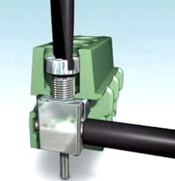
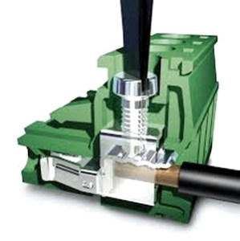
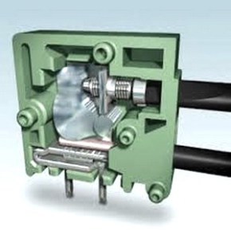
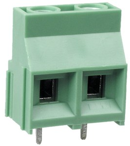
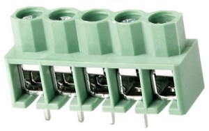
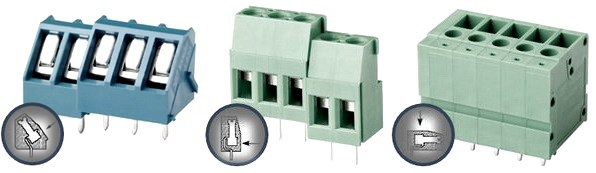
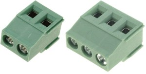
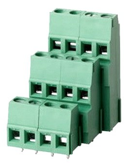
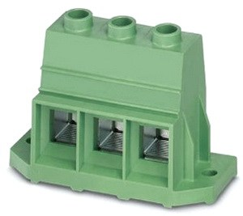
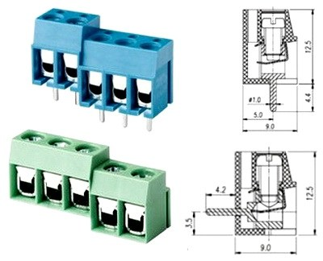

Винтовые зажимы для печатного монтажа
По типу фиксации винтовые клеммники для монтажных плат делятся на следующие виды:
 |
Лепестковый. Винт давит на тонкую пластину (лепесток) и прижимает ее к жиле. Это наиболее бюджетное исполнение зажима. |
 |
Лифтовый. Винт прижимает рельефную пластину к проводу. Надежное соединение осуществляется за счет рельефа пластины, повышающего площадь контакта, в отличие от лепесткового вида. Лифтовый зажим не требует периодической подтяжки соединения и не позволяет проводу вырваться из зажима, ввиду большого усилия затяжки. |
 |
ТОР-зажим. Токоведущая жила закрепляется не винтом, а специальным рычагом, на который воздействует винт. Это дает возможность регулировать усилие фиксации, защищать провод от вибрации и вырывания, а также достижения герметичности контакта. Это дорогостоящий, но более совершенный вид винтового зажима. |
В зависимости от формы корпуса винтовые клеммники для монтажных плат делятся:
 |
С рельефной обоймой. Эти модели имеют дополнительную диэлектрическую защиту вокруг гнезда для провода, что снижает риск короткого замыкания. |
 |
С круговой защитой. В них модернизирована зажимная часть клемм, которая полностью охватывает проводник, и при креплении зажимает его со всех сторон. Это повышает надежность контакта и не дает проводу вырваться. |
Особенности зажимов для монтажных плат
- Угол подключения. Особенности установки и поставленные задачи заставляют проектировщиков выполнять конструкции винтовых зажимов с разным углом подключения.

- Модульность. Модели современных клеммников для монтажных плат на корпусе имеют специальные пазы, которые дают возможность соединять их друг с другом, получая клеммную линейку необходимой длины с нужным числом контактов.

- Многоярусность. Для экономии площади монтажной платы и простоты установки винтовые клеммники изготавливают с несколькими ярусами. Общее число контактов равно сумме контактов на всех ярусах.

- Фиксирующие фланцы. Клеммники для монтажных плат, рассчитанные на большой ток более 200 ампер, оснащены вспомогательным фиксирующим фланцем, с помощью которого клеммник соединяется с монтажной платой, и уменьшает нагрузку на установочные штифты.

- Угловое и прямое исполнение. Для более удобной установки клеммников на монтажную плату их корпус выполняют угловой и прямой формы.

Технические параметры
- Материал корпуса является диэлектриком, устойчив к перепадам температур, растрескиванию и динамическим нагрузкам. Материалом является капрон, полиамид, нейлон, либо их комбинирование для использования в специальных условиях.
- Материалом зажимной части являются сплавы фосфористой бронзы, никелированной бронзы, нержавеющей стали. Требованиями являются устойчивость к электрическим нагрузкам, коррозии, высокой температуре, а также хорошая электропроводность.
- Материал штырей для пайки. Обычно это никелированная латунь. Фиксирующие винты производят из оцинкованной латуни с головкой под отвертку.
- Число контактов определяется количеством подключаемых проводов, и может достигать 24 штук.
- Шаг контактов – расстояние между ними на клемме. Интервал шагов находится в пределах 2,54-15 мм.
- Сечение жил определяется наименьшим и наибольшим возможным сечением провода, подключаемого к зажиму, и может быть 0,08-25 мм2.
- Сила тока и напряжение определяют параметры для разных исполнений клемм.
- Допустимая рабочая температура определяет интервал, в пределах которого обеспечивается постоянная нормальная работа винтового зажима. Эта характеристика зависит от материала контактов и корпуса.
Недостатки винтовых зажимов
- Специалисты знают, что вибрация является основной причиной, по которой затяжка винтовых соединений клемм ослабевает, что приводит к полному отвинчиванию винтов, и нарушению контакта проводов. Кажется, что клеммные зажимы в распредкоробке не подвержены вибрациям и находятся в покое. Но это ошибочное мнение, так как жилые дома расположены в пространстве, где имеются различные природные и техногенные вибрации, особенно в крупных городах.
- Другим отрицательным явлением, снижающим качество контакта винтовых соединений, является текучесть металла, который под воздействием усилия винта и прижимных пластин растекается подобно пластилину в стороны. Алюминий и медь, из которых изготавливаются жилы проводов, могут растекаться на несколько микрон за сутки, поэтому прижимное усилие снижается.
- Ввиду ослабевания затяжки винтов, необходимо периодически их подтягивать. В противном случае контакт будет ухудшаться, что приведет к его нагреванию и возможному возгоранию при пиковых нагрузках в цепи.
Источники
tehpribory.ru - Винтовые клеммники. Виды и типы. Работа и особенности